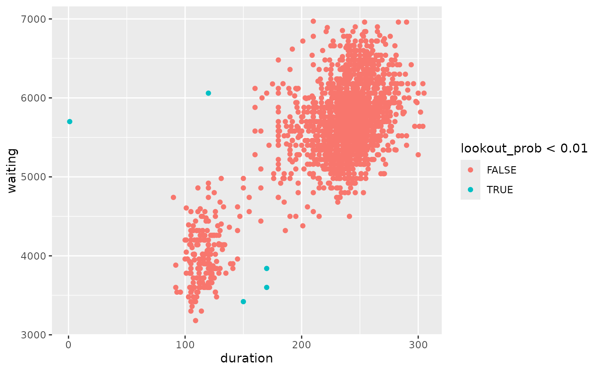
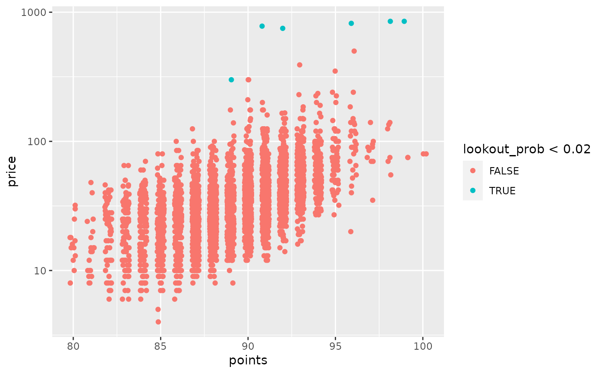

Compute density scores or leave-one-out density scores from a model or a kernel density estimate of a data set. The density scores are defined as minus the log of the conditional density, or kernel density estimate, at each observation. The leave-one-out density scores (or LOO density scores) are obtained by estimating the conditional density or kernel density estimate using all other observations.
Usage
density_scores(object, loo = FALSE, ...)
# S3 method for default
density_scores(
object,
loo = FALSE,
h = kde_bandwidth(object, method = "double"),
H = kde_bandwidth(object, method = "double"),
...
)
# S3 method for kde
density_scores(object, loo = FALSE, ...)
# S3 method for lm
density_scores(object, loo = FALSE, ...)
# S3 method for gam
density_scores(object, loo = FALSE, ...)Arguments
- object
A model object or a numerical data set.
- loo
Should leave-one-out density scores be computed?
- ...
Other arguments are ignored.
- h
Bandwidth for univariate kernel density estimate. Default is
kde_bandwidth.- H
Bandwidth for multivariate kernel density estimate. Default is
kde_bandwidth.
Details
If the first argument is a numerical vector or matrix, then a kernel density estimate is computed, using a Gaussian kernel, with default bandwidth given by a robust normal reference rule. Otherwise the model is used to compute the conditional density function at each observation, from which the density scores (or possibly the LOO density scores) are obtained.
Examples
# Density scores computed from bivariate data set
of <- oldfaithful |>
filter(duration < 7000, waiting < 7000) |>
mutate(
fscores = density_scores(cbind(duration, waiting)),
loo_fscores = density_scores(cbind(duration, waiting), loo = TRUE),
lookout_prob = lookout(density_scores = fscores, loo_scores = loo_fscores)
)
of |>
ggplot(aes(x = duration, y = waiting, color = lookout_prob < 0.01)) +
geom_point()

# Density scores computed from bivariate KDE
f_kde <- kde(of[, 2:3], H = kde_bandwidth(of[, 2:3]))
of |>
mutate(
fscores = density_scores(f_kde),
loo_fscores = density_scores(f_kde, loo = TRUE)
)
#> # A tibble: 2,189 × 6
#> time duration waiting fscores loo_fscores lookout_prob
#> <dttm> <dbl> <dbl> <dbl> <dbl> <dbl>
#> 1 2015-01-02 14:53:00 271 5040 14.6 14.9 0.795
#> 2 2015-01-09 23:55:00 247 6060 11.1 11.1 1
#> 3 2015-02-07 00:49:00 203 5460 13.0 13.0 1
#> 4 2015-02-14 01:09:00 195 5221 13.7 13.8 1
#> 5 2015-02-21 01:12:00 210 5401 12.5 12.5 1
#> 6 2015-02-28 01:11:00 185 5520 13.5 13.6 1
#> 7 2015-03-07 00:50:00 160 5281 15.7 17.0 0.164
#> 8 2015-03-13 21:57:00 226 6000 11.9 11.9 1
#> 9 2015-03-13 23:37:00 190 5341 13.6 13.7 1
#> 10 2015-03-20 22:26:00 102 3961 13.4 13.5 1
#> # ℹ 2,179 more rows
# Density scores computed from linear model
of <- oldfaithful |>
filter(duration < 7200, waiting < 7200)
lm_of <- lm(waiting ~ duration, data = of)
of |>
mutate(
fscore = density_scores(lm_of),
loo_fscore = density_scores(lm_of, loo = TRUE),
lookout_prob = lookout(density_scores = fscore, loo_scores = loo_fscore)
) |>
ggplot(aes(x = duration, y = waiting, color = lookout_prob < 0.02)) +
geom_point()

# Density scores computed from GAM
of <- oldfaithful |>
filter(duration > 1, duration < 7200, waiting < 7200)
gam_of <- mgcv::gam(waiting ~ s(duration), data = of)
of |>
mutate(
fscore = density_scores(gam_of),
lookout_prob = lookout(density_scores = fscore)
) |>
filter(lookout_prob < 0.02)
#> # A tibble: 4 × 5
#> time duration waiting fscore lookout_prob
#> <dttm> <dbl> <dbl> <dbl> <dbl>
#> 1 2016-07-05 10:34:00 240 7080 10.2 0.00375
#> 2 2017-05-31 17:01:00 246 7020 8.87 0.0123
#> 3 2017-09-08 23:23:00 246 7020 8.87 0.0123
#> 4 2018-09-29 22:10:00 241 4500 8.85 0.0125